EcoVision IA: Sistema Inteligente de Clasificación de Residuos mediante Visión por Computador
Frank Ortegón y [Nombre del segundo integrante]
Maestría en Inteligencia Artificial, [Nombre de la universidad]
Visión por Computador
[Nombre del docente]
23 de noviembre de 2026
La identificación incorrecta de los materiales dificulta su separación y aprovechamiento en instituciones educativas y organizaciones con programas de gestión ambiental. Este trabajo desarrolla EcoVision IA, una aplicación web que clasifica el material aparente de una imagen en seis categorías (cartón, vidrio, metal, papel, plástico y otros residuos) con un modelo de visión por computador entrenado y alojado en la plataforma Roboflow y consumido mediante una API REST propia. Se utilizó el conjunto público TrashNet (2527 imágenes), del que se depuraron 6 imágenes con etiquetas contradictorias y se generaron particiones estratificadas de entrenamiento, validación y prueba (70/15/15, semilla 42) sin fuga de datos. Se entrenaron dos modelos ResNet50, sin y con aumento de datos, y se eligió entre ellos únicamente con la validación; la diferencia no fue estadísticamente distinguible (McNemar, p = 0,678), por lo que se conservó el modelo más simple. En una única evaluación sobre el conjunto de prueba (379 imágenes), el modelo alcanzó una exactitud de 88,65 % (IC 95 %: 85,49 % a 91,82 %), un F1 macro de 0,856 y un AUC macro aproximado de 0,980. La clase otros residuos fue la más difícil (F1 = 0,619). El sistema incluye clasificación individual y por lotes, evaluación con imágenes etiquetadas, métricas con scikit-learn, 100 pruebas automatizadas y una configuración de contenedor verificada localmente. Se documentan las limitaciones, entre ellas que el proveedor omite las probabilidades inferiores a ~1 %, lo que vuelve aproximadas las curvas ROC.
Palabras clave: visión por computador, clasificación de imágenes, residuos, TrashNet, ResNet50, Roboflow, curva ROC, FastAPI
La separación adecuada de los residuos depende, en primer lugar, de reconocer de qué material está hecho cada objeto. En instituciones educativas y organizaciones con programas de sostenibilidad esa decisión la toman a diario estudiantes, docentes y personal administrativo que no siempre cuentan con una guía visual a mano, y un material mal identificado dificulta su aprovechamiento posterior. La visión por computador ofrece una vía para apoyar esa decisión: un modelo de clasificación de imágenes puede proponer, a partir de una fotografía, la categoría del material aparente (Espejo, s. f.-b).
Este trabajo desarrolla y evalúa EcoVision IA, una aplicación web que integra un modelo de clasificación entrenado y desplegado con una plataforma en la nube. El énfasis está puesto en dos aspectos que suelen quedar fuera de los prototipos: una evaluación estadística rigurosa del modelo y una aplicación que consume el modelo real a través de una API, sin resultados simulados. Las cifras de resultados de este documento provienen de ejecuciones reales registradas en el repositorio del proyecto y se generan mediante código, no se transcriben a mano; las únicas excepciones, señaladas como aproximadas, son los valores leídos de las gráficas de entrenamiento de la plataforma.
Identificar mal un material dificulta su separación y aprovechamiento. Un clasificador automático puede reducir la fricción de esa decisión, pero solo es útil si se conoce su desempeño por categoría, su grado de confianza y sus límites. Por ello el problema no se reduce a entrenar un modelo con alta exactitud global: exige medir qué clases confunde, qué tan fiables son sus probabilidades y qué errores comete con más seguridad aparente. El sistema se plantea como apoyo a la decisión y no como árbitro: clasifica el material aparente según las categorías aprendidas y no determina si un residuo es reciclable.
Objetivo general. Implementar un modelo de clasificación de imágenes de residuos, integrarlo en una aplicación web que permita su uso real mediante una API y evaluar su rendimiento con métricas de precisión, exhaustividad, F1, curvas ROC y AUC.
Objetivos específicos.
El alcance se limita a la clasificación de una imagen completa en seis categorías; no se aborda la detección de varios objetos en una escena ni la determinación de reciclabilidad. El documento sigue el orden de la actividad: contexto y área de aplicación, selección y preparación del conjunto de datos, entrenamiento, despliegue del modelo, creación de la aplicación y evaluación. Cierran el texto la discusión, las limitaciones y las conclusiones. Los anexos relacionan cada requisito con su evidencia verificable.
El proyecto se desarrolla como actividad de la asignatura de Visión por Computador de la maestría y se plantea para un escenario institucional concreto: centros educativos y organizaciones con programas de gestión ambiental, cuyos usuarios potenciales son estudiantes, docentes, personal administrativo y responsables de sostenibilidad. No es un producto comercial en operación; es un prototipo funcional con fines académicos que puede ser el punto de partida de una herramienta de apoyo en puntos de separación de residuos o en campañas de educación ambiental.
El proyecto pertenece al área de reconocimiento de objetos, en la modalidad de clasificación de imágenes: dada una imagen que contiene un único objeto, el sistema asigna una de seis etiquetas. En el flujo clásico de un sistema de visión por computador (captura, preprocesamiento, segmentación y reconocimiento o clasificación; Espejo, s. f.-d), este trabajo se centra en la última etapa, apoyándose en un modelo que aprende directamente de los píxeles y en un preprocesamiento mínimo (corrección de orientación y redimensionamiento).
Las redes neuronales convolucionales aprenden filtros que detectan patrones locales (bordes, texturas) y los combinan en representaciones jerárquicas mediante capas de convolución, agrupación (pooling) y capas completamente conectadas (Espejo, s. f.-c). Las redes residuales (ResNet) añaden conexiones que suman la entrada de un bloque a su salida, lo que facilita entrenar redes profundas (He et al., 2016); el modelo de este trabajo es una ResNet de 50 capas.
Con pocos datos etiquetados, el aprendizaje por transferencia reutiliza un modelo entrenado en un conjunto amplio y lo ajusta a la nueva tarea (Pan y Yang, 2010; Espejo, s. f.-e). El aumento de datos, por su parte, genera variaciones de las imágenes de entrenamiento para reducir el sobreajuste, siempre que las transformaciones tengan sentido para la tarea (Shorten y Khoshgoftaar, 2019; Espejo, s. f.-e).
La evaluación de un clasificador multiclase se apoya en la matriz de confusión y en las métricas derivadas de ella. La exactitud puede ser engañosa con clases desbalanceadas; por eso se complementa con precisión, exhaustividad (recall) y F1, la media armónica de las dos anteriores (Espejo, s. f.-a). Para una clase dada, la curva ROC representa la tasa de verdaderos positivos frente a la de falsos positivos al variar el umbral de decisión, y el área bajo la curva (AUC) resume la capacidad de separar esa clase de las demás (Fawcett, 2006). En problemas con clases minoritarias, la curva de precisión y exhaustividad (PR) puede ser más informativa que la ROC (Saito y Rehmsmeier, 2015). Para multiclase se usa el esquema uno contra el resto y se promedian las clases (promedio macro). Finalmente, un modelo está calibrado si su confianza coincide con su acierto real; las redes profundas modernas tienden a ser sobreconfiadas (Guo et al., 2017).
Se seleccionó TrashNet (Yang y Thung, 2016), un conjunto público de fotografías de un único objeto sobre una cartulina blanca, tomadas con tres teléfonos móviles y organizadas en seis clases: vidrio, papel, cartón, plástico, metal y otros residuos (trash). Se eligió porque es abierto (el repositorio declara licencia MIT), porque corresponde exactamente al problema de clasificación de material y porque es lo bastante pequeño para reproducirse en un equipo personal. Se descargó la versión redimensionada (dataset-resized.zip, 42,8 MB) del repositorio de los autores (Thung y Yang, s. f.) el 23 de noviembre de 2026 (UTC), y se registró su huella SHA-256 para garantizar la trazabilidad.
El script de exploración abrió y verificó cada archivo con Pillow. Las 2527 imágenes resultaron íntegras: todas son JPEG en modo RGB de 512 × 384 píxeles, con tamaños de archivo entre 5,6 y 57,9 kB. Los conteos por clase coinciden con los publicados por los autores. La Figura 1 muestra el desequilibrio: la clase mayoritaria (papel) tiene 4,34 veces más imágenes que la minoritaria (otros residuos, 5,42 % del total). La Figura 2 ofrece cinco ejemplos aleatorios por clase (semilla 42); se observa la homogeneidad del fondo y la heterogeneidad interna de la clase otros residuos, que reúne envolturas, servilletas y espuma.
Figura 1
Distribución de las imágenes por categoría y partición
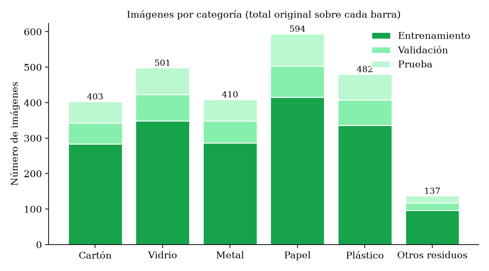
Nota. Las barras apiladas muestran las imágenes usadas en cada partición; el número sobre cada barra es el total original de la clase. Elaboración propia con 02_explore_dataset.py y 03_split_dataset.py.
Figura 2
Ejemplos aleatorios de cada categoría
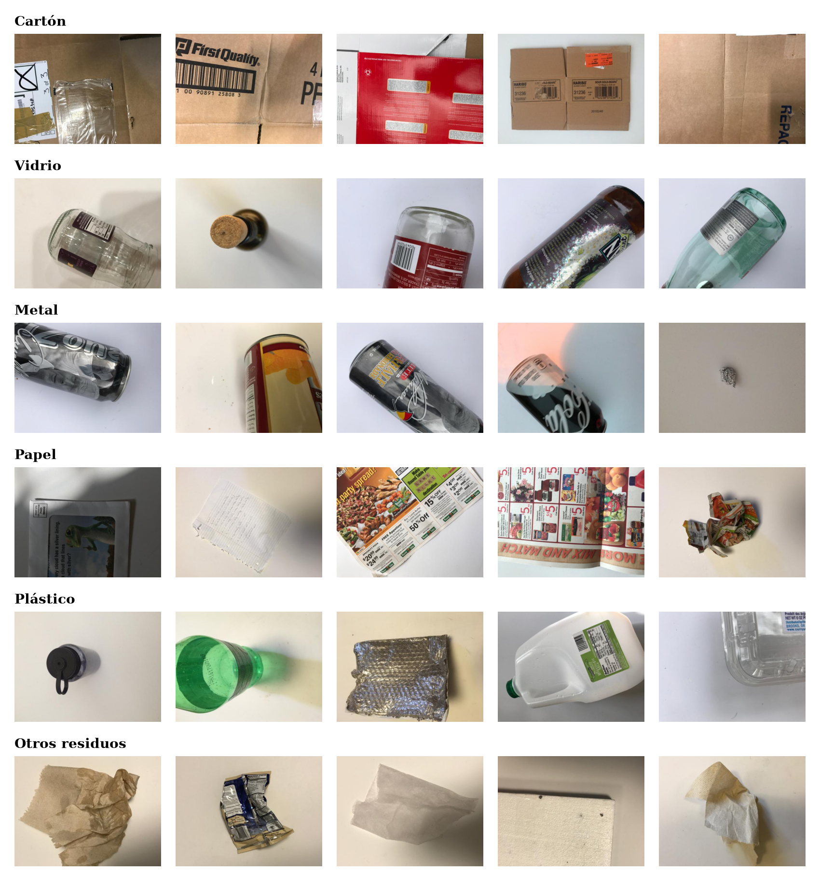
Nota. Cinco imágenes por clase seleccionadas al azar (semilla 42). Fuente: TrashNet (Yang y Thung, 2016).
Se buscaron duplicados exactos (hash SHA-256) y casi exactos (hash perceptual con distancia de Hamming ≤ 2). Aparecieron 3 pares de imágenes con contenido idéntico byte a byte pero etiquetas contradictorias (por ejemplo, la misma fotografía etiquetada como vidrio y como metal). Como su etiqueta verdadera es indeterminable, se excluyeron las 6 imágenes implicadas, quedando 2521 imágenes. Los pares casi idénticos no se eliminaron, porque el hash perceptual produce falsos positivos con fondos blancos; en cambio, los 15 grupos conectados que formaron se asignaron completos a una sola partición, de modo que ninguna fotografía casi repetida pueda estar a la vez en entrenamiento y en prueba.
Las imágenes se dividieron en entrenamiento (70 %), validación (15 %) y prueba (15 %) mediante una partición estratificada por clase con semilla 42, tratando cada grupo de casi duplicados como una unidad indivisible. Las particiones se exportaron a archivos CSV y la ausencia de fuga se verifica con pruebas automatizadas (sin nombres ni huellas compartidas entre particiones, grupos no divididos, proporciones del 70/15/15 con tolerancia del 1 % y estratificación con diferencia máxima de 2 puntos porcentuales por clase). El conjunto de prueba no se usó para ninguna decisión de diseño. La Tabla 1 resume el resultado.
Tabla 1
Imágenes por categoría y partición
| Categoría | Original | Excluidas | Entrenamiento | Validación | Prueba |
|---|---|---|---|---|---|
| Cartón | 403 | 0 | 283 | 60 | 60 |
| Vidrio | 501 | 3 | 348 | 75 | 75 |
| Metal | 410 | 1 | 286 | 62 | 61 |
| Papel | 594 | 0 | 415 | 88 | 91 |
| Plástico | 482 | 2 | 336 | 72 | 72 |
| Otros residuos | 137 | 0 | 96 | 21 | 20 |
| Total | 2527 | 6 | 1764 | 378 | 379 |
Nota. Total tras excluir 6 imágenes con etiquetas contradictorias. Porcentajes de la partición sobre el total: entrenamiento 69,97 %, validación 14,99 %, prueba 15,03 %.
Se generó una estructura de carpetas train/valid/test con una subcarpeta por clase, que Roboflow interpreta como la división y la etiqueta de cada imagen (Roboflow, s. f.-c). Al importar se eligió la opción de respetar los valores existentes, y se comprobó en la plataforma que los conteos por clase y por partición coincidían con la Tabla 1. El aumento de datos se aplicó únicamente sobre el conjunto de entrenamiento; las particiones de validación y prueba no se modificaron.
Se usó Roboflow para entrenar y alojar el modelo. La plataforma ofrece, para clasificación de una sola etiqueta, las arquitecturas ResNet (18, 34, 50 y 101 capas), ViT y DINOv3 (Roboflow, s. f.-b). Se eligió ResNet50 por ser una arquitectura de referencia para la transferencia de aprendizaje (He et al., 2016; Espejo, s. f.-e) y porque la plataforma la ofrece con un costo de entrenamiento bajo. Ambas versiones del conjunto usan el mismo preprocesamiento (orientación automática y redimensionamiento a 224 × 224 con estiramiento) y los hiperparámetros por defecto de la plataforma (hasta 300 épocas); la interfaz de Roboflow solo muestra el número máximo de épocas y no informa el punto de partida de los pesos, por lo que el resto no se puede documentar (véase Limitaciones). Se entrenó una línea base sin aumento de datos y una segunda versión con aumento en línea, para que la única diferencia entre ambas fuera el aumento (Tabla 2).
Tabla 2
Configuración de los dos entrenamientos
| Elemento | Modelo 1 (línea base) | Modelo 2 (con aumento) |
|---|---|---|
| Versión del conjunto | v1-baseline-sin-aumento | v2-aumento-en-linea |
| Arquitectura | ResNet50 | ResNet50 |
| Entrada | 224 × 224 | 224 × 224 |
| Imágenes (train/valid/test) | 1764 / 378 / 379 | 1764 / 378 / 379 |
| Aumento en línea (solo entrenamiento) | Ninguno | Volteo horizontal y vertical; rotación ±15°; brillo ±15 %; exposición ±10 % |
| Hiperparámetros | Por defecto | Por defecto |
| Épocas ejecutadas | 28 (curvas de 0 a 27) | No registradas |
| Créditos de la plataforma | 0,17 | No registrados |
Nota. Datos tomados de la receta de entrenamiento que muestra Roboflow y de ml/results/training_log.json. Las probabilidades de aplicación del aumento fueron 100 % (volteo) y 50 % (rotación, brillo y exposición).
Los aumentos se eligieron con criterio de dominio (Shorten y Khoshgoftaar, 2019; Espejo, s. f.-e). Las fotografías se toman desde arriba con el objeto apoyado, por lo que no existe una orientación canónica y los volteos y las rotaciones pequeñas son seguros. Se descartaron los cambios de tono, saturación y escala de grises porque el color ayuda a distinguir categorías como cartón o plástico.
En el modelo 1 la exactitud de validación subió de aproximadamente 72 % en la época 0 a cerca de 90 % hacia la época 6, alcanzó un máximo cercano a 93,6 % en la época 15 y terminó en torno a 89,7 % en la última época (valores leídos de la gráfica de Roboflow, por lo que son aproximados). La pérdida de entrenamiento presentó picos repetidos de hasta aproximadamente 1,4, señal de un entrenamiento inestable. La exactitud de validación del modelo desplegado calculada después (0,9365; Tabla 3) coincide con el máximo de la curva, lo que indica que la plataforma conserva el mejor punto del entrenamiento. Esa selección del mejor punto con la validación tiene una consecuencia metodológica que se retoma en la evaluación: la exactitud de validación es una estimación optimista.
Antes de mirar el conjunto de prueba se fijó la regla de selección: elegir con las métricas de validación calculadas por el módulo propio de evaluación y, ante diferencias no significativas, preferir el modelo más simple. Ambos modelos se evaluaron sobre las 378 imágenes de validación con el mismo código que usa la aplicación (Tabla 3).
Tabla 3
Comparación de los dos modelos en el conjunto de validación
| Métrica | Modelo 1 (sin aumento) | Modelo 2 (con aumento) |
|---|---|---|
| Exactitud | 0,9365 | 0,9286 |
| Precisión macro | 0,9168 | 0,9006 |
| Recall macro | 0,9175 | 0,8937 |
| F1 macro | 0,9168 | 0,8966 |
| F1 de otros residuos | 0,762 | 0,650 |
| AUC macro (aprox.) | 0,9888 | 0,9852 |
| AP macro (aprox.) | 0,9429 | 0,9301 |
Nota. n = 378. AUC y AP son aproximados (véase la sección de despliegue). El F1 de otros residuos se calcula con solo 21 imágenes.
El modelo 1 obtuvo valores ligeramente superiores en todas las métricas, pero la diferencia no es distinguible del azar: el modelo 1 acertó 13 imágenes que el modelo 2 falló y el modelo 2 acertó 10 que el modelo 1 falló (prueba exacta de McNemar, 1947, p = 0,678); la diferencia de exactitud fue de 0,79 puntos, con un intervalo de confianza del 95 % por bootstrap (Efron y Tibshirani, 1993) de -1,59 a +3,17 puntos porcentuales, que incluye el cero. Se seleccionó, por tanto, el modelo 1 (sin aumento), identificado como ecovision-trashnet/1.
Una interpretación prudente es que el aumento de datos no redujo el sobreajuste de forma apreciable en este conjunto. Con una pérdida de entrenamiento inestable y 21 imágenes de validación de la clase minoritaria, las diferencias entre ambos modelos están dentro del ruido de muestreo; no se exploraron otras arquitecturas ni hiperparámetros, decisión consciente de acotar el alcance.
Durante el proceso, la plataforma mostró en pantalla sus evaluaciones automáticas sobre el conjunto de prueba de ambos modelos. Esas cifras (con umbrales de confianza distintos, 34 % y 65 %) no se usaron para decidir, no son comparables entre sí y se declaran aquí por transparencia. La evaluación oficial sobre prueba se ejecutó una sola vez, después de elegir el modelo.
El modelo seleccionado se aloja en la infraestructura de Roboflow y se consume mediante su API de inferencia sin servidor (serverless; Roboflow, s. f.-a). La solicitud es un POST a https://serverless.roboflow.com/{proyecto}/{versión} con la imagen codificada en base64 y la clave de la cuenta en la cabecera Authorization: Bearer; en este proyecto el identificador es ecovision-trashnet/1. Mediante llamadas reales se comprobó que ese identificador resuelve al modelo entrenado ecovision-trashnet-1-resnet50-t1 y que el identificador ecovision-trashnet/2 resuelve al segundo modelo, lo que permitió compararlos sin ambigüedad. La respuesta de clasificación contiene, para cada clase devuelta, su nombre y su confianza, además de la mejor clase.
La verificación empírica del comportamiento del servicio reveló un hecho con consecuencias para la evaluación: aun con el umbral de confianza en cero, la API omite las clases cuya probabilidad es inferior a aproximadamente 1 %. En una imagen de plástico, por ejemplo, devolvió cinco de las seis clases, con una suma de 0,9948, y omitió la clase metal. Como la suma de las probabilidades es conocida, el sistema estima las clases omitidas repartiendo el residuo (1 menos la suma) entre ellas y marca cada respuesta con un indicador de estimación. La exactitud, la precisión, el recall y el F1 no dependen de esta estimación, porque usan la clase de mayor probabilidad; las curvas ROC y PR y sus áreas sí, y por eso se reportan como aproximadas y se acompañan de un análisis de sensibilidad (Tabla 8).
La latencia de la API que informa Roboflow es de milisegundos (3,5 ms en la ficha del modelo 1, tiempo de servidor sin red). Medida de extremo a extremo desde la aplicación, una clasificación individual tarda entre 620 y 825 ms según la red, y la evaluación de las 379 imágenes de prueba a través de la aplicación tardó 18 segundos con cuatro solicitudes en paralelo.
La aplicación sigue una arquitectura de tres capas con separación de responsabilidades (Figura 3). El navegador ejecuta una aplicación de una sola página en React que solo se comunica con el backend; el backend, escrito en Python con FastAPI, valida las entradas, orquesta las llamadas al modelo alojado y calcula las métricas con scikit-learn mediante un paquete de evaluación independiente que también usan los scripts del proyecto. La clave de Roboflow existe únicamente en el backend (variable de entorno) y nunca llega al navegador.
Figura 3
Arquitectura de EcoVision IA
Nota. Elaboración propia. Las flechas indican el sentido de las solicitudes HTTPS.
El backend (Python 3.12, FastAPI 0.165.0, Pydantic 2.14.4) expone cinco endpoints con contratos tipados y documentación OpenAPI/Swagger generada automáticamente (Tabla 4). Las respuestas de error tienen un formato uniforme con un código y un mensaje en español.
Tabla 4
Endpoints de la API
| Método y ruta | Función |
|---|---|
GET /api/health | Estado del servicio, si el modelo está configurado y los límites vigentes |
GET /api/model/info | Información del modelo leída de un registro de entrenamiento real |
POST /api/predict | Clasifica una imagen y devuelve las seis probabilidades |
POST /api/predict/batch | Clasifica hasta 20 imágenes; un fallo no detiene el resto |
POST /api/evaluate | Recibe imágenes y un CSV filename,true_label y devuelve todas las métricas |
Nota. Documentación interactiva en /docs. Los límites (tamaño máximo de 5 MB por imagen, 20 imágenes por lote y 500 por evaluación) son configurables.
Las entradas se validan en capas: extensión (JPG, JPEG, PNG o WEBP), tamaño, contenido real de la imagen (se abre con Pillow, sin confiar en la extensión), número de píxeles (contra imágenes malformadas de tamaño desproporcionado) y número de archivos. Las imágenes se procesan en memoria y no se almacenan. Se configuraron orígenes CORS explícitos (el modo de producción rechaza comodines), cabeceras de seguridad básicas y tiempos de espera en toda llamada externa, con un único reintento ante errores transitorios del proveedor. El registro de eventos no incluye URLs ni mensajes de excepciones de la biblioteca HTTP, y una prueba automatizada verifica que la clave no aparezca en errores ni en registros. Si el modelo no está configurado, la API responde con un error 503 explícito en lugar de devolver una predicción simulada.
La interfaz (React 19.3.1, TypeScript 6.0.3, Vite 8.3.8, Tailwind CSS 4.3.5, Recharts 3.11.0 y Axios) está íntegramente en español y es responsiva. Tiene cinco módulos, accesibles desde una barra lateral con indicador del estado del servicio:
El módulo de evaluación responde al requisito de que el usuario cargue conjuntos de datos y obtenga resultados: acepta hasta 500 imágenes con su etiqueta real, relaciona cada imagen con su fila del CSV, ejecuta el modelo y calcula las métricas. Para comprobar que la aplicación es fiel al análisis científico, se evaluaron las 379 imágenes de prueba a través de la interfaz y se obtuvieron los mismos valores que con el script (exactitud 88,65 %, F1 macro 0,856, AUC macro 0,980).
Figura 4
Módulo Inicio
Nota. Captura de la aplicación en ejecución local.
Figura 5
Módulo Clasificador con una predicción real
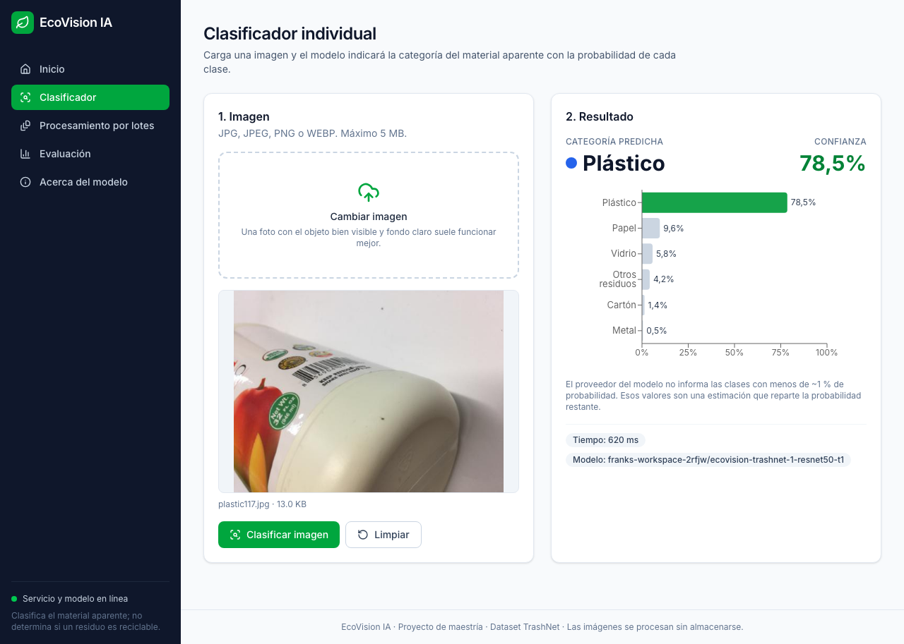
Nota. Imagen plastic117.jpg del conjunto de validación, clasificada por el modelo alojado en Roboflow: plástico con 78,5 % de confianza. Las clases con menos de ~1 % de probabilidad son estimadas.
Figura 6
Módulo de procesamiento por lotes con un archivo inválido
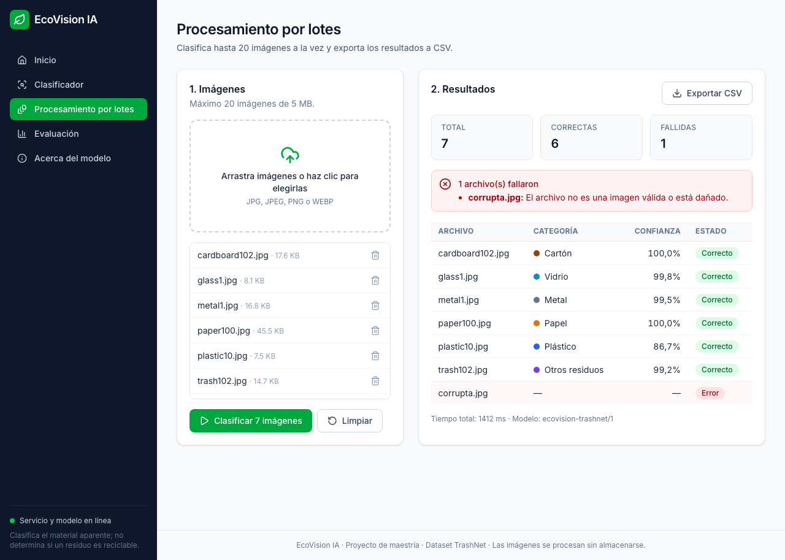
Nota. Seis imágenes de validación y un archivo corrupto con extensión .jpg, que el servidor rechazó y la interfaz informó por separado sin detener el lote.
Figura 7
Módulo de evaluación con el conjunto de prueba completo
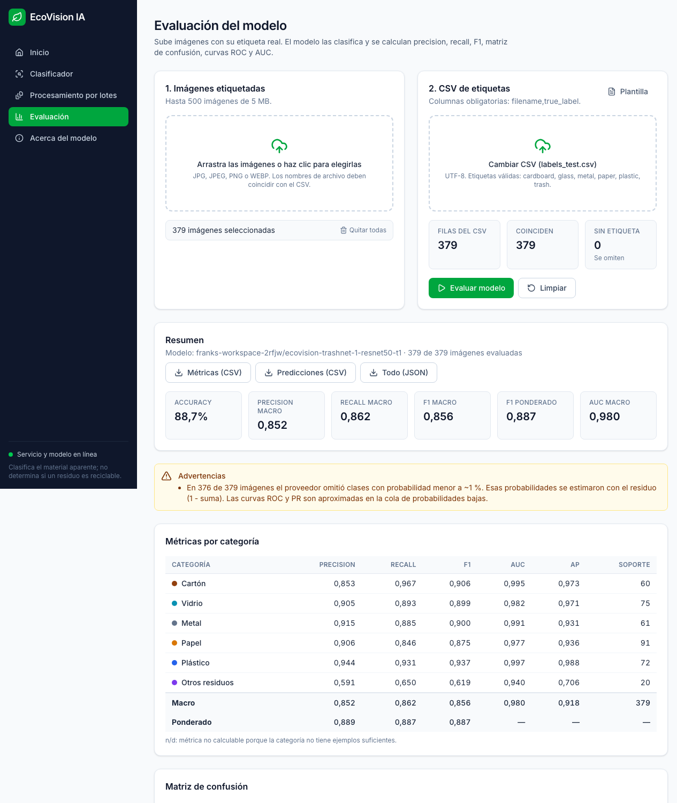
Nota. Parte superior del módulo tras evaluar las 379 imágenes de prueba a través de la aplicación. Se muestra el resumen, la advertencia sobre probabilidades estimadas y la tabla de métricas.
Figura 8
Módulo Acerca del modelo
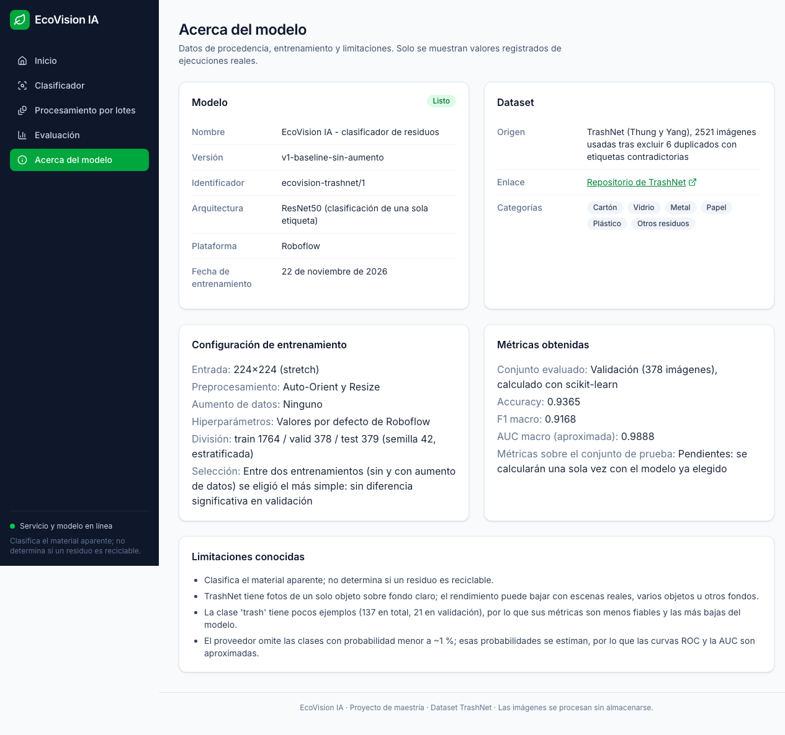
Nota. Captura previa a la evaluación final: la sección de métricas se actualizó después con los resultados sobre el conjunto de prueba.
El proyecto incluye 100 pruebas automatizadas (Tabla 5). Las del backend usan un clasificador falso solo dentro de las pruebas y un transporte HTTP simulado para el adaptador de Roboflow, de modo que el servicio real nunca contiene una vía simulada. Las pruebas de métricas comparan con valores calculados a mano (por ejemplo, un AUC de 7/8 en un caso mínimo) y verifican que la curva ROC usa probabilidades y no etiquetas predichas, y las de la interfaz cubren validación de archivos, exportación a CSV segura frente a inyección de fórmulas, mapeo de errores y el flujo de clasificación con éxito, error y confianza baja. El código backend pasa el análisis estático con Ruff y el modo estricto de mypy, y el frontend pasa la verificación de tipos y ESLint.
Tabla 5
Pruebas automatizadas del proyecto
| Componente | Pruebas | Qué verifican |
|---|---|---|
| Backend (API y adaptador) | 55 | Éxito, errores, entradas inválidas, límites, CORS, seguridad de la clave |
| Evaluación y particiones | 20 | Métricas con valores calculados a mano; ausencia de fuga de datos |
| Frontend | 25 | Validación, CSV, errores de red, flujo del clasificador |
| Total | 100 |
Nota. Resultados de la ejecución previa a la emisión de este documento (commit 29c0a02).
El backend se empaqueta en una imagen de Docker con un usuario sin privilegios; la imagen se construyó y se ejecutó localmente en modo producción con la clave real, y se comprobó el estado del servicio, la lectura del registro del modelo, una predicción real, una evaluación con scikit-learn dentro del contenedor y el rechazo de orígenes CORS no permitidos, con un consumo de memoria de unos 148 MiB. El repositorio incluye la configuración para publicar el backend en Render y el frontend en Vercel. Render documenta que los servicios gratuitos se suspenden tras 15 minutos sin tráfico y tardan cerca de un minuto en reactivarse (Render, s. f.), un detalle relevante para una demostración.
Estado de la publicación. El modelo está desplegado y es accesible por API en Roboflow. La aplicación web se verificó en ejecución local y en contenedor, y su configuración de publicación en Render y Vercel está preparada, pero al emitir este documento no se había publicado; las direcciones públicas se incorporan al completarla.
La evaluación final se realizó una sola vez, con el modelo ya elegido, sobre las 379 imágenes del conjunto de prueba, que no había intervenido en ninguna decisión. Las predicciones se obtuvieron de la API real y las métricas se calcularon con scikit-learn (Pedregosa et al., 2011) en el paquete propio del proyecto. Las curvas ROC y PR se construyen con las probabilidades por clase bajo el esquema uno contra el resto, nunca con las etiquetas predichas, y los intervalos de confianza del 95 % se estimaron con bootstrap de 2000 remuestreos. La ejecución quedó registrada en una bitácora de usos del conjunto de prueba.
El modelo alcanzó una exactitud de 88,65 % (IC 95 %: 85,49 % a 91,82 %), un F1 macro de 0,856 y un F1 ponderado de 0,887. El AUC macro aproximado fue de 0,980 (IC 95 %: 0,964 a 0,993) y el AP macro de 0,918. Como se anticipó, la exactitud de prueba es inferior a la de validación (93,65 %); la diferencia es coherente con el hecho de que la validación se usó para seleccionar el mejor punto del entrenamiento, lo que la vuelve optimista, mientras que la prueba es una estimación insesgada del desempeño con imágenes nuevas del mismo dominio.
La Tabla 6 presenta las métricas por categoría. Cinco de las seis clases superan un F1 de 0,87. La clase otros residuos es, con claridad, la más difícil (F1 = 0,619, AP = 0,706), un resultado esperable: es la minoritaria (20 imágenes de prueba) y la más heterogénea, pues agrupa objetos sin una apariencia común. Sus intervalos de confianza son los más anchos, reflejo del tamaño de muestra.
Tabla 6
Métricas por categoría en el conjunto de prueba
| Categoría | Precisión | Recall | F1 [IC 95 %] | AUC | AP | n |
|---|---|---|---|---|---|---|
| Cartón | 0,853 | 0,967 | 0,906 [0,85; 0,95] | 0,995 | 0,973 | 60 |
| Vidrio | 0,905 | 0,893 | 0,899 [0,84; 0,95] | 0,982 | 0,971 | 75 |
| Metal | 0,915 | 0,885 | 0,900 [0,84; 0,95] | 0,991 | 0,931 | 61 |
| Papel | 0,906 | 0,846 | 0,875 [0,82; 0,92] | 0,977 | 0,936 | 91 |
| Plástico | 0,944 | 0,931 | 0,937 [0,89; 0,97] | 0,997 | 0,988 | 72 |
| Otros residuos | 0,591 | 0,650 | 0,619 [0,41; 0,78] | 0,940 | 0,706 | 20 |
| Macro | 0,852 | 0,862 | 0,856 [0,81; 0,90] | 0,980 | 0,918 | 379 |
| Ponderado | 0,889 | 0,887 | 0,887 | — | — | 379 |
Nota. n = 379. Entre corchetes, el intervalo de confianza del 95 % del F1 por bootstrap. AUC y AP son aproximados por la estimación de probabilidades omitidas (Tabla 8). Promedios calculados sobre las seis clases.
La matriz de confusión (Figura 9) muestra una diagonal dominante. La confusión más frecuente es papel clasificado como cartón (9 imágenes, el 9,9 % de la clase papel), lo que resulta razonable porque ambos materiales pueden compartir color y textura; entre los errores de mayor confianza (Figura 13) figuran cajas de cartón blanco y una pieza gris de aspecto cartonado etiquetadas como papel. Le siguen, con cuatro imágenes cada una, metal clasificado como otros residuos y otros residuos clasificados como papel, consistentes con la heterogeneidad de esa clase. La Tabla 7 lista las confusiones más frecuentes.
Figura 9
Matriz de confusión en el conjunto de prueba
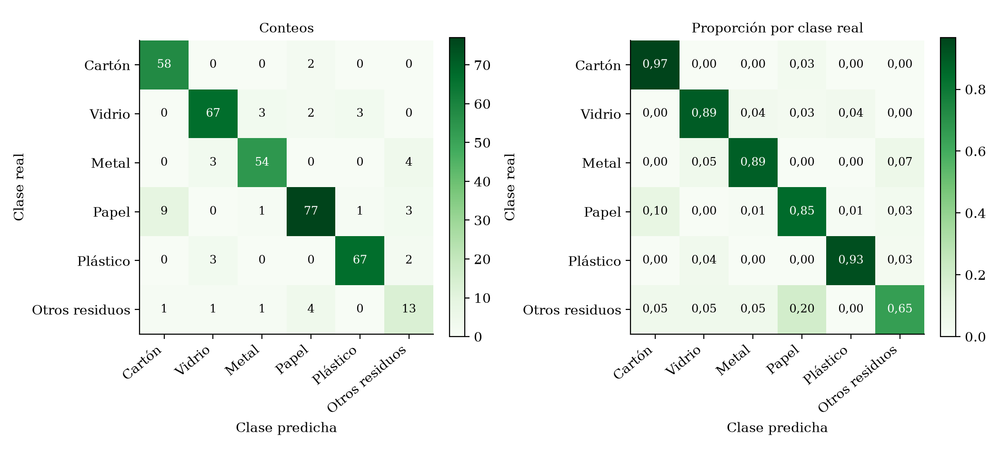
Nota. Izquierda, conteos; derecha, proporción por clase real (las filas suman 1). La diagonal corresponde a los aciertos.
Tabla 7
Confusiones más frecuentes en el conjunto de prueba
| Clase real | Clase predicha | Imágenes | % de la clase real |
|---|---|---|---|
| Papel | Cartón | 9 | 9,9 % |
| Metal | Otros residuos | 4 | 6,6 % |
| Otros residuos | Papel | 4 | 20,0 % |
| Vidrio | Metal | 3 | 4,0 % |
| Vidrio | Plástico | 3 | 4,0 % |
| Metal | Vidrio | 3 | 4,9 % |
Nota. Porcentaje respecto al total de imágenes de la clase real.
Las curvas ROC (Figura 10) se acercan a la esquina superior izquierda en todas las clases, con AUC entre 0,940 y 0,997. Las curvas PR (Figura 11) matizan ese panorama para la clase minoritaria: mientras su AUC es alta (0,940), su AP es mucho menor (0,706), lo que confirma que en problemas desbalanceados la curva PR es más informativa que la ROC (Saito y Rehmsmeier, 2015). Dicho de otro modo, el modelo ordena bien las imágenes de otros residuos frente a las demás, pero mantener alta la precisión de esa clase a la vez que su exhaustividad es difícil.
Figura 10
Curvas ROC uno contra el resto (conjunto de prueba)
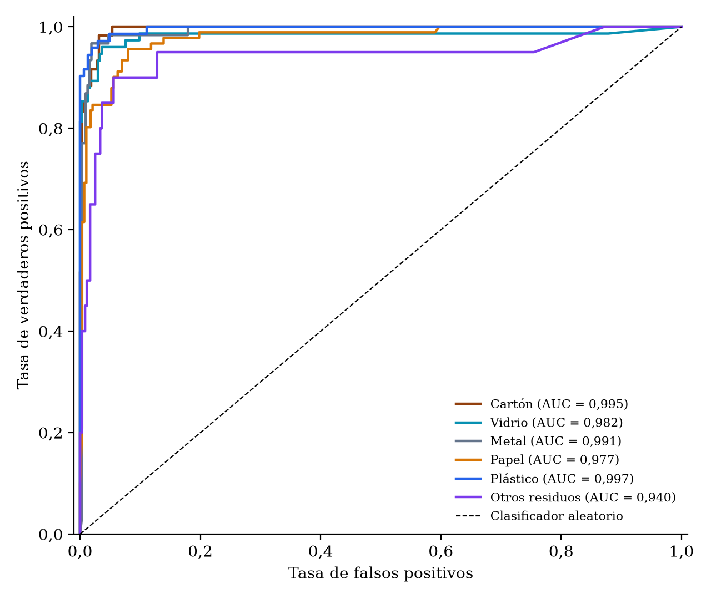
Nota. AUC macro aproximado = 0,980. La diagonal representa un clasificador aleatorio.
Figura 11
Curvas Precision-Recall uno contra el resto (conjunto de prueba)
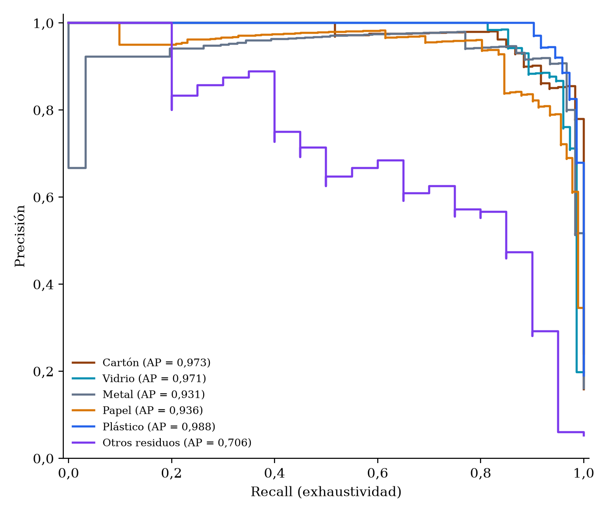
Nota. AP macro = 0,918. La clase otros residuos queda por debajo del resto.
El diagrama de fiabilidad (Figura 12) y el error de calibración esperado (ECE = 0,064) muestran que el modelo es sobreconfiado: su confianza media (94,8 %) supera a su exactitud (88,65 %), un comportamiento habitual en redes profundas modernas (Guo et al., 2017). Esto tiene una consecuencia práctica para la interfaz: un porcentaje de confianza alto no equivale a la misma probabilidad de acierto, por lo que se presenta como una medida orientativa y no como una probabilidad calibrada.
Figura 12
Diagrama de fiabilidad en el conjunto de prueba
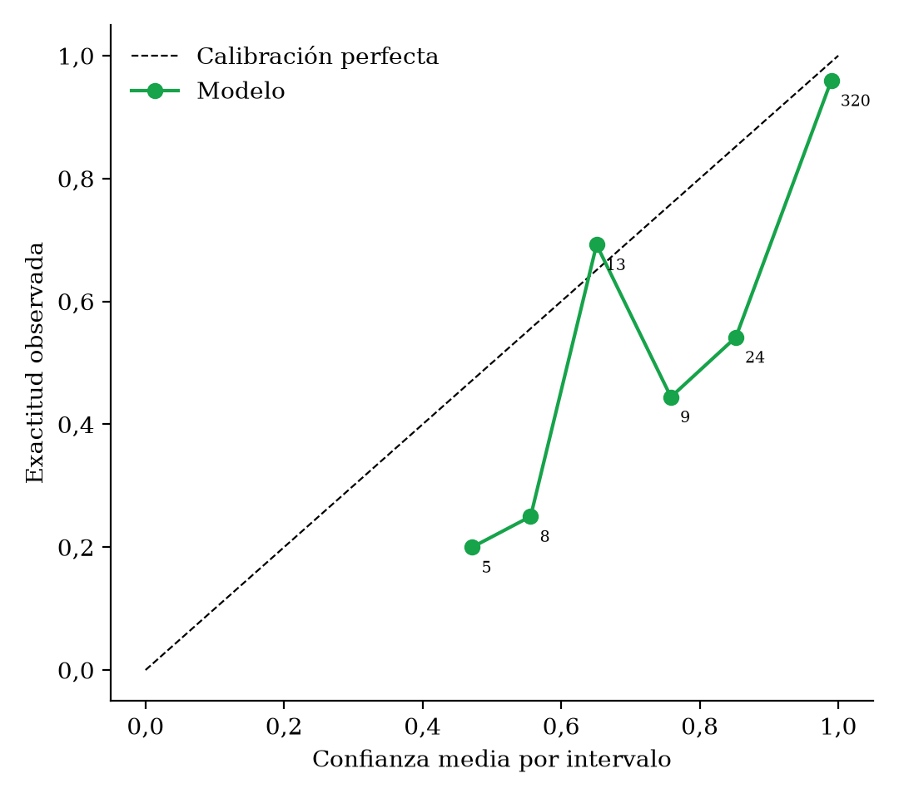
Nota. Cada punto es un intervalo de confianza; el número indica cuántas imágenes contiene. La diagonal es la calibración perfecta. ECE = 0,064.
El aviso de confianza baja (umbral de 60 %) marcó 13 de las 379 imágenes. Entre las marcadas, la exactitud cae a 23,1 %, frente a 91,0 % en las no marcadas, y el aviso captura 10 de los 43 errores totales. El umbral funciona como filtro útil, aunque la mayoría de los errores ocurren con confianza alta, lo que concuerda con la sobreconfianza observada. La inspección de los errores de mayor confianza (Figura 13) muestra casos genuinamente ambiguos: fragmentos de vidrio que parecen metálicos por el brillo, cajas de cartón blanco que parecen papel y envolturas de la clase otros residuos con aspecto de papel o plástico.
Figura 13
Errores de mayor confianza en el conjunto de prueba
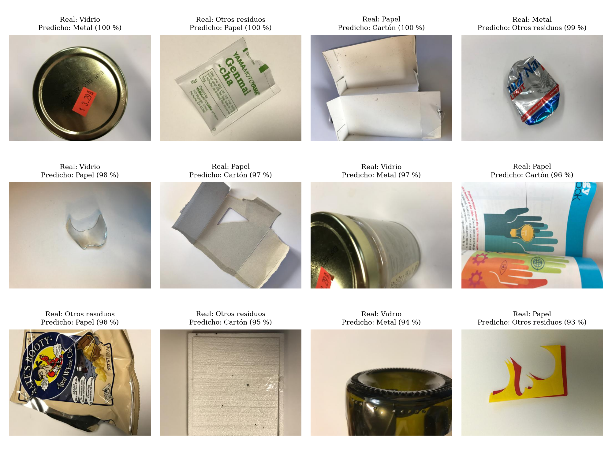
Nota. Doce errores ordenados por confianza decreciente, con la etiqueta real y la predicha.
Para cuantificar el efecto de estimar las probabilidades omitidas por el proveedor, se recalcularon el AUC y el AP con el método principal (reparto del residuo) y con un relleno de ceros (Tabla 8). La exactitud y el F1 son idénticos con ambos métodos. El AUC macro varía 0,002 y el AP macro 0,004 entre los dos métodos, diferencias pequeñas que no alteran las conclusiones pero que justifican reportar estas áreas como aproximadas.
Tabla 8
Sensibilidad de las métricas de área al método de estimación
| Métrica | Residuo repartido | Relleno con ceros | Diferencia |
|---|---|---|---|
| AUC macro | 0,9805 | 0,9785 | 0,0020 |
| AP macro | 0,9176 | 0,9137 | 0,0039 |
| AUC cartón | 0,9950 | 0,9950 | 0,0000 |
| AUC vidrio | 0,9823 | 0,9875 | 0,0052 |
| AUC metal | 0,9914 | 0,9854 | 0,0060 |
| AUC papel | 0,9775 | 0,9734 | 0,0040 |
| AUC plástico | 0,9967 | 0,9967 | 0,0000 |
| AUC otros residuos | 0,9401 | 0,9329 | 0,0072 |
Nota. En el conjunto de prueba, 376 de 379 imágenes tuvieron al menos una clase omitida por el proveedor.
El modelo alcanza un desempeño alto y equilibrado en cinco de las seis categorías, con un AUC macro cercano a la unidad, y sus errores se concentran en fronteras semánticamente razonables (papel frente a cartón) y en la clase más heterogénea y escasa. Esta última es también la de peor desempeño en el trabajo original sobre TrashNet: con una máquina de vectores de soporte, Yang y Thung (2016) reportaron una exactitud de prueba de 63 % (partición 70/30) y, para la clase otros residuos, una precisión de 0,24 y un recall de 0,35. El repositorio de los autores indica además cerca de 75 % de exactitud con una red convolucional tras ajustar la inicialización de pesos (partición 70/13/17; Thung y Yang, s. f.). La exactitud de 88,65 % de este trabajo es superior, pero no es directamente comparable: cambian el modelo, las particiones, la depuración de duplicados y la plataforma de entrenamiento, que probablemente parte de pesos preentrenados (dato que la interfaz no confirma). Lo que sí es coherente con el curso es que, con pocos datos, apoyarse en una arquitectura profunda probada resulta eficaz (Espejo, s. f.-e).
Tres hallazgos metodológicos merecen destacarse. Primero, el aumento de datos no produjo una mejora distinguible del azar, lo que recuerda que es una herramienta cuyo beneficio depende de los datos y no un ingrediente que mejore siempre. Segundo, la brecha entre validación y prueba ilustra por qué la selección de modelo y la estimación final del desempeño deben hacerse sobre conjuntos distintos. Tercero, la sobreconfianza del modelo confirma, en un caso concreto, la observación de Guo et al. (2017) y es la razón por la que la aplicación trata la confianza como orientativa.
Se implementó y evaluó EcoVision IA, un sistema que clasifica el material aparente de una imagen en seis categorías con un modelo ResNet50 entrenado y alojado en Roboflow y consumido por una aplicación web propia a través de una API. Sobre un conjunto de prueba independiente de 379 imágenes, el modelo obtuvo una exactitud de 88,65 %, un F1 macro de 0,856 y un AUC macro aproximado de 0,980, con un desempeño sólido en cinco categorías y dificultades concentradas en la clase minoritaria y heterogénea.
Más allá de las cifras, el trabajo cumple los objetivos planteados: un conjunto de datos preparado de forma reproducible y sin fuga; un modelo entrenado, comparado y seleccionado con un criterio fijado de antemano; un despliegue real mediante API con las credenciales protegidas; una aplicación funcional con clasificación individual, por lotes y evaluación; y una evaluación estadística completa, interpretada con honestidad sobre sus límites. Como trabajo futuro se plantea ampliar y equilibrar la clase otros residuos, comparar otras arquitecturas, calibrar las probabilidades y validar el sistema con imágenes propias del entorno de uso.
Efron, B., y Tibshirani, R. J. (1993). An introduction to the bootstrap. Chapman & Hall.
Espejo, A. (s. f.-a). Algoritmos de visión por computador [Material de curso]. Curso Visión por Computador.
Espejo, A. (s. f.-b). Aplicaciones y desafíos actuales en visión por computador [Material de curso]. Curso Visión por Computador.
Espejo, A. (s. f.-c). Fundamentos de redes neuronales convolucionales (CNN) [Material de curso]. Curso Visión por Computador.
Espejo, A. (s. f.-d). Introducción a la visión por computador y estructura de una imagen [Material de curso]. Curso Visión por Computador.
Espejo, A. (s. f.-e). Técnicas de entrenamiento y optimización para modelos de visión por computador [Material de curso]. Curso Visión por Computador.
Fawcett, T. (2006). An introduction to ROC analysis. Pattern Recognition Letters, 27(8), 861–874. https://doi.org/10.1016/j.patrec.2005.10.010
Guo, C., Pleiss, G., Sun, Y., y Weinberger, K. Q. (2017). On calibration of modern neural networks. En Proceedings of the 34th International Conference on Machine Learning (Vol. 70, pp. 1321–1330). PMLR. https://proceedings.mlr.press/v70/guo17a.html
He, K., Zhang, X., Ren, S., y Sun, J. (2016). Deep residual learning for image recognition. En 2016 IEEE Conference on Computer Vision and Pattern Recognition (CVPR) (pp. 770–778). IEEE. https://doi.org/10.1109/CVPR.2016.90
McNemar, Q. (1947). Note on the sampling error of the difference between correlated proportions or percentages. Psychometrika, 12(2), 153–157. https://doi.org/10.1007/BF02295996
Pan, S. J., y Yang, Q. (2010). A survey on transfer learning. IEEE Transactions on Knowledge and Data Engineering, 22(10), 1345–1359. https://doi.org/10.1109/TKDE.2009.191
Pedregosa, F., Varoquaux, G., Gramfort, A., Michel, V., Thirion, B., Grisel, O., Blondel, M., Prettenhofer, P., Weiss, R., Dubourg, V., Vanderplas, J., Passos, A., Cournapeau, D., Brucher, M., Perrot, M., y Duchesnay, É. (2011). Scikit-learn: Machine learning in Python. Journal of Machine Learning Research, 12, 2825–2830.
Render. (s. f.). Deploy for free. Render Docs. Recuperado el 23 de noviembre de 2026, de https://render.com/docs/free
Roboflow. (s. f.-a). Inference. En Roboflow API reference [Documentación]. GitHub. Recuperado el 23 de noviembre de 2026, de https://github.com/roboflow/computer-vision-skills/blob/main/skills/roboflow-api-reference/inference.md
Roboflow. (s. f.-b). Roboflow training and evaluation [Documentación]. GitHub. Recuperado el 23 de noviembre de 2026, de https://github.com/roboflow/computer-vision-skills/blob/main/skills/roboflow-training-and-evaluation/SKILL.md
Roboflow. (s. f.-c). Upload a dataset. Roboflow Docs. Recuperado el 23 de noviembre de 2026, de https://docs.roboflow.com/nl_NL/get-started/uploading-classification-datasets
Saito, T., y Rehmsmeier, M. (2015). The precision-recall plot is more informative than the ROC plot when evaluating binary classifiers on imbalanced datasets. PLOS ONE, 10(3), Artículo e0118432. https://doi.org/10.1371/journal.pone.0118432
Shorten, C., y Khoshgoftaar, T. M. (2019). A survey on image data augmentation for deep learning. Journal of Big Data, 6, Artículo 60. https://doi.org/10.1186/s40537-019-0197-0
Thung, G., y Yang, M. (s. f.). TrashNet [Conjunto de datos]. GitHub. https://github.com/garythung/trashnet
Yang, M., y Thung, G. (2016). Classification of trash for recyclability status [Informe de proyecto, CS229]. Stanford University. https://cs229.stanford.edu/proj2016/report/ThungYang-ClassificationOfTrashForRecyclabilityStatus-report.pdf
La Tabla A1 relaciona cada paso solicitado en la actividad con el lugar del documento y con los archivos del repositorio que permiten verificarlo. Repositorio: https://github.com/FrankOrtegon/ecovision-ia.
Tabla A1
Requisitos de la actividad y evidencia asociada
| Requisito | Sección | Evidencia verificable |
|---|---|---|
| Contexto y área de aplicación | Introducción; Contexto y Área de Aplicación | docs/requirements.md; módulo Inicio |
| Selección y preparación del conjunto de datos | Selección y Preparación del Conjunto de Datos | ml/scripts/01–04; ml/results/dataset_summary.json, split_summary.json, splits/*.csv; tests/test_dataset_splits.py |
| Entrenamiento y ajustes | Entrenamiento del Modelo | ml/results/training_log.json; docs/training.md; eval_val_v1 y eval_val_v2 |
| Despliegue accesible por API | Despliegue del Modelo | Modelo ecovision-trashnet/1 en Roboflow; backend/app/integrations/roboflow.py |
| Aplicación con interfaz amigable e integración por API | Creación de la Aplicación | backend/, frontend/; Figuras 4–8; pruebas automatizadas |
| Carga de datos por el usuario y resultados | Interfaz de usuario | Módulos Clasificador, Lotes y Evaluación |
| Precisión, recall, F1, ROC y AUC | Evaluación del Modelo | ml/results/eval_test_v1/ (metrics.json, classification_report.txt, predictions.csv, gráficos) |
| Análisis y documentación de resultados | Evaluación; Discusión; Limitaciones | extra_analysis.json; docs/evaluation.md |
Todo el análisis puede reproducirse desde el repositorio (commit 29c0a02, generado el 23 de noviembre de 2026). Los pasos, desde la raíz del proyecto con Python 3.12, son:
ml/evaluation y backend.ml/scripts/01_download_dataset.py, 02_explore_dataset.py, 03_split_dataset.py y 04_prepare_roboflow_upload.py (semilla 42).05_run_evaluation.py (validación con --split val; prueba solo con --final) y 06_analyze_results.py.docs/informe/make_figures.py y docs/informe/build_informe.py, que leen los resultados guardados y generan este documento.El entrenamiento en Roboflow no es reproducible de forma exacta con la información que expone la plataforma (véase Limitaciones); sí lo son la preparación de datos, la evaluación y la aplicación.